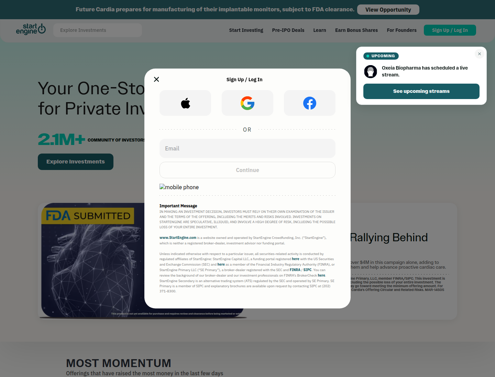
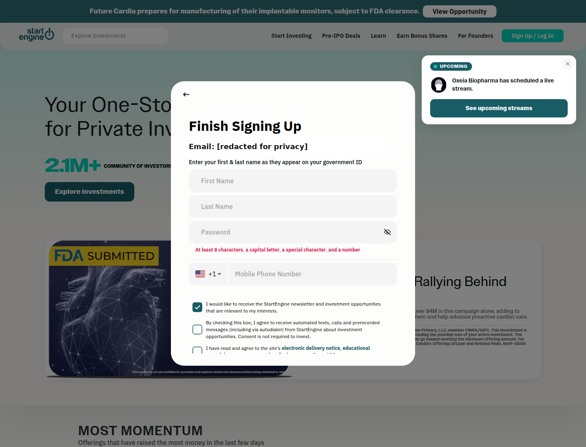
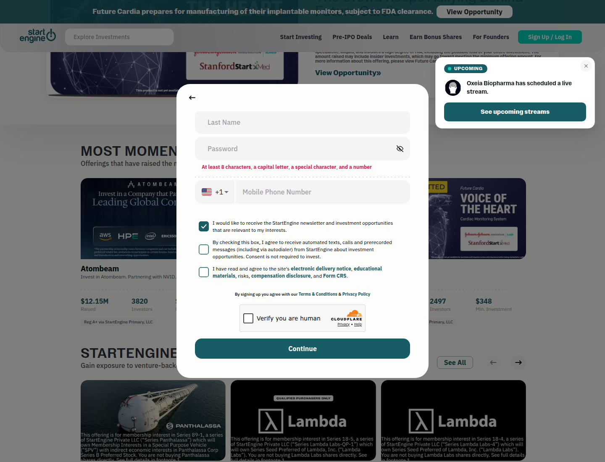

Profile
- Company
- StartEngine
- Url
- https://www.startengine.com/
- Source Category
- Capital & discovery marketplaces
- Research Status
- Deep Cited Research / Draft Complete
- Current Status
- live - active regulated crowdfunding/private-market platform; SEC filing and help center current.
- Founded Launch Year
- 2014
- Company Age
- 12 years
- Hq Country
- United States
- Operating Area
- United States; private-company and pre-IPO investing
- Target Users
- retail investors, accredited investors, founders/issuers raising capital
- Product Category
- equity crowdfunding, Reg CF/Reg A/Reg D offerings, private investment marketplace, ATS secondary marketplace
Product Flows
- Swipe Card Interface
- no
- Mutual Match
- no
- Ai Matching Scoring
- not found
- Ai Deck Scoring
- not found
- Founder To Founder Flow
- no
- Founder To Investor Flow
- yes - issuer raise/investment flow
- Project Profiles
- yes - offering/company pages
- Messaging Collaboration
- yes - comments/updates
- Mobile App
- yes
- Web App
- yes
Security & Documents
- Nda Gated Unlock
- no
- Data Room
- not found
- E Signature
- yes - signed investment/subscription documents
- Meeting Prep Ai Briefing
- not found
Pricing, Funding & Traction
- Pricing Model
- investors generally pay 3.5% processing fee capped at $700; issuer pricing not fully public; Reg CF cap $5M and Reg A+ Tier 2 cap $75M
- Business Model
- funding portal/broker-dealer fees, investor processing fees, issuer campaign services, ATS secondary marketplace, private/pre-IPO offerings
- Total Funding
- not found in primary; secondary Clay says $84M across 8 rounds
- Funding Rounds
- not found in primary; secondary says 8 rounds
- Investors
- not found in primary; secondary names KPCS Ventures and Pario Ventures
- Funding Source Type
- equity crowdfunding/Reg A and venture/private investors
- Last Funding Date
- not found in primary; secondary says 2023-08-16
- Users Traction
- 1,785,000 registered users and 425,700 investors as of 2025-12-31 SEC filing
- Deals Funding Facilitated
- Help article says over 1,000 founders raised over $1.3B combined; footnote includes $846M through StartEngine plus $470M previously through SeedInvest
- Partnerships
- FINRA/SEC-regulated affiliates; SeedInvest asset acquisition; Vinovest acquisition
- Media Coverage
- PRNewswire covered SeedInvest asset acquisition; SEC filings available
- Product Update Activity
- active; 2024-2026 help center and 2026 SEC filings; Marketplace/ATS help page current
- Acquisition Rebrand History
- formed March 19 2014 as StartEngine Crowdsourcing, renamed StartEngine Crowdfunding May 8 2014; acquired SeedInvest assets May 2023; completed Vinovest purchase March 2026
Scores
- Product Overlap Score
- 4
- Feature Maturity Score
- 3
- Market Traction Score
- 2
- Funding Strength Score
- 3
- Ai Depth Score
- 3
- Nda Security Strength Score
- 4
- Network Moat Score
- 2
- Direct Threat Score
- 3.2
- Source Confidence
- High for operations/traction; Medium for corporate funding due to secondary-source reliance
Evidence Notes
- Primary Sources
- https://www.startengine.com/disclaimer
https://help.startengine.com/what-is-startengine-rkOTTdAMF
https://help.startengine.com/is-there-any-cost-to-investing-SyYlAORzY
https://help.startengine.com/what-can-startengine-do-to-market-my-raise-ry4s6uRMK
https://help.startengine.com/en_us/what-is-startengine-marketplace-rJAxCdAGt
https://www.sec.gov/Archives/edgar/data/1661779/000110465926037922/stgc-20251231x10k.htm
https://apps.apple.com/us/app/startengine-pre-ipo-investing/id1560434961
https://help.startengine.com/does-startengine-have-an-app-BylrM2y7F - Secondary Sources
- https://www.prnewswire.com/news-releases/startengine-acquires-seedinvest-assets-301819631.html
https://www.linkedin.com/company/startengined
https://www.clay.com/dossier/startengine-funding - Unsupported Claims
- No verified source found for AI matching/scoring, AI deck scoring, swipe UI, mutual matching.
- Contradictions
- Issuer Reg CF description in SEC filing text appears to contain an internal wording inconsistency; official help/disclaimer clarify Reg CF, Reg A, and Reg D offerings.
- Last Checked
- 2026-07-19
- Notes
- Relevant founder-investor capital platform; regulated public-investing flow differs from BizMatch matching/deal-room workflow.
Registration Flow
Research date: 2026-07-19. Screenshots are sanitized public copies from the private registration-flow capture set; credentials, tokens, verification links/codes, browser chrome, and private identifiers are not intentionally published.
Outcome: stopped at CAPTCHA / Cloudflare / anti-bot verification.
Stop point: Finish Signing Up form at the unchecked Cloudflare 'Verify you are human' challenge, before entering identity/contact details, accepting disclosures, submitting Continue, creating an account, or requesting email verification
Blocker / boundary: StartEngine requires a Cloudflare 'Verify you are human' challenge before the signup form can be continued. The task explicitly requires stopping at Cloudflare and never bypassing anti-bot controls. The form also requires truthful government-ID name and a mobile phone number, which were not supplied by the authorized credential file.
- Official public homepage. StartEngine's official homepage presents private-market investment opportunities and a prominent Sign Up / Log In entry in the main navigation. The page also explains that creating an account is the first step in its investing flow.
- Combined sign-up and login entry. The Sign Up / Log In action opens an in-page authentication dialog. It offers Apple, Google, and Facebook options plus a direct email field and Continue button. No OAuth option was opened.
- Finish Signing Up form. After the authorized email was entered and Continue was selected, StartEngine displayed its Finish Signing Up form. It requests first and last name exactly as shown on government ID, a password, country calling code, and mobile phone number. The password rule shown is at least 8 characters with a capital letter, special character, and number. The form has an initially selected newsletter checkbox, an optional unchecked automated texts/calls consent checkbox, and an unchecked required disclosure-consent checkbox. The email is redacted in the retained screenshot.
- Cloudflare human-verification stop point. The lower portion of the same form states that signing up agrees to the Terms & Conditions and Privacy Policy, then presents a Cloudflare 'Verify you are human' challenge immediately before Continue. The challenge was not attempted or bypassed.


